Druckluftkanonen dienen der Sicherstellung des Materialflusses. Dabei werden Material-Konglomerate und -adhäsionen mittels Druckluftstoßwellen aufgelöst, sodass sich der gewünschte Massenfluss im Silo wieder einstellt. Druckluftkanonen können sowohl zur regelmäßigen Fließunterstützung als auch zur Stauauflösung eingesetzt werden.
Die Luftkanonen bestehen aus einem Druckbehälter und einer Ventileinheit mit Schnellentlüftungssystem. Dabei wird die im Behälter gespeicherte Druckluftmenge schlagartig in das aufgestaute Material expandiert. Die ausgeblasene Druckluftmenge erhöht den Druck im Verhältnis zum Gesamtvolumen des Silos aber nur sehr gering, sodass dieses System bei vielen Silobauformen eingesetzt werden kann. Durch Einsatz von Druckminderern kann die Druck-Belastung außerdem an die Silofestigkeit angeglichen werden. Die Luftkanonen können von Hand oder vollautomatisch auf elektronischem Wege angesteuert werden. Zur Befüllung der Behälter mit Druckluft ist eine Kompressor-Anlage erforderlich. Die Druckbehälter der Luftkanonen können permanent gefüllt sein oder erst zum Zwecke des bevorstehenden Einsatzes befüllt werden.
Das Funktionsprinzip ist in Abb. 8.1 dargestellt.
Größe, Leistung, Anzahl und Montageorte müssen im Einzelfall festgelegt werden. Diese Parameter hängen im Wesentlichen von Lage und Stärke der zu erwartenden bzw. bekannten Materialverfestigungen ab.
Prinzipiell kann das System auch mit Inertgas wie z. B. Stickstoff betrieben werden. Dies ist aus explosionstechnischen Gesichtspunkten auch vorteilhaft.
Vor dem Betreten des Siloinneren muss in jedem Fall das Befüll-Ventil der Druckluftkanonen geschlossen und die Druckluftkanonen müssen abgeschossen, d. h. entspannt werden.
Sind mehrere Druckluftkanonen zu einer Einheit zusammengefasst, sollte die komplette Steuerung an einem gut zugänglichen Ort konzentriert werden. Bei der Anbringung der einzelnen Druckluftkanonen am Siloumfang sollte darauf geachtet werden, dass eine gute Zugänglichkeit für Wartungsarbeiten und Prüftätigkeiten (Druckbehälter!) gewährleistet ist. Wenn keine festen Arbeitspodeste, die über entsprechende Leitern zu erreichen sind, vorgesehen werden, können auch fahrbare Hebebühnen o. ä. zum Einsatz kommen.
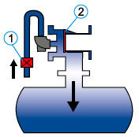 |
Die Druckluft strömt über das Dreiwegeventil (1) ein, schiebt den Kolben (2) vor und füllt den Behälter auf Bereitschaftszustand |
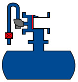 |
Der Behälter ist aufgefüllt. Es gibt keinen Druckluftverbrauch mehr. Um den Luftstoß auszulösen, wid das Dreiwegeventil entlüftet. |
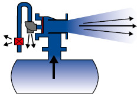 |
Die gespeicherte Luft strömt schlagartig durch das Ausblasrohr der Luftkanone ins Siloinnere |
Abb. 8.1 Funktionsweise einer Druckluftkanone
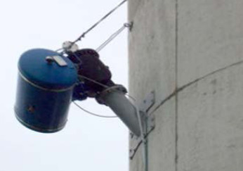
Abb. 8.2 Beispiel für eine am Silokörper montierte Druckluftkanone
Für die Beseitigung von Späne-Brücken, Material-Anbackungen an den Siloinnenwänden und das Speichervolumen einschränkende sogenannte Rattenlöcher (Schachtbildungen) stellen auf die Siloreinigung spezialisierte Firmen seit ca. 30 Jahren Geräte und Bedienpersonal zur Verfügung, die diese aufwändigen und für das im Siloinneren beteiligte Personal riskanten Tätigkeiten gefahrlos und effizient von außerhalb des Späne-Lagerraumes durchführen lassen.
Sämtliche bei dieser Tätigkeit eingesetzten Geräte werden über Druckluft betrieben und bestehen komplett aus Aluminium (Magnesium-Anteil < 7,5 %).
Dies bietet folgende Vorteile:
Das Gleiche gilt für einen elektrischen Anschluss mit 230 Volt für die Versorgung einer Halogenlampe.
Anbackungen an den Innenwänden kleinerer Silos können über Druckluftlanzen durch eine Öffnung im Silodach angegangen werden. Die Reichweite dieser Lanzen beträgt etwa 10 m. Bei einem Betriebsdruck von 5 bis 7 bar beträgt der Druckluftverbrauch etwa 360 m3/h. Um alle Bereiche der Siloinnenwände erreichen zu können, müssen – insbesondere bei Silos mit größerem Innendurchmesser – mehrere Öffnungen im Silodach vorhanden sein. Dies sollte mit dem Systemlieferanten vorab abgestimmt werden.
Haben sich Brücken, Dome oder Bögen im Späne-Material gebildet, die das Abfließen zum Siloboden und damit eine Austragung des gespeicherten Materials verhindern, müssen diese zunächst – in der Regel von oben – durchbohrt werden. Dazu gibt es spezielle Bohrgeräte, mit denen Brücken bis zu 45 m Tiefe mittels Druckluft durchbohrt werden können und so eine erste durchgängige Öffnung für das abfließende Späne- Material geschaffen werden kann. Die Geräte benötigen für ihre Aufstellung einen allseitigen Freiraum (Länge/Breite/Höhe) von ca. 2 m.
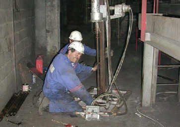
Abb. 8.3 Im Dach zum Speicherraum angesetzte Bohreinrichtung
In das so vorgebohrte Loch kann – wieder von oben über ein Mannloch – ein pneumatisch betriebener Motor eingeführt und über ein bewegliches Gestänge von außerhalb des Späne-Lagerraumes bedient werden.
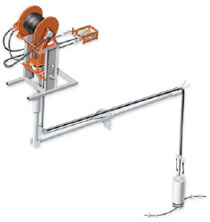
Abb. 8.4 Gelenkarm mit pneumatisch betriebenem Rotationsmotor
An diesem Motor werden Ketten aus unterschiedlichen Materialien (z. B. Gusseisen, Edelstahl oder Messing) eingehängt. Der Motor kommt über Druckluftbeaufschlagung in Rotation und die Ketten werden durch die Zentrifugalkräfte gestreckt.
Die Auswahl der Reinigungswerkzeuge (Ketten, Bürsten) richtet sich nach:
Beim Reinigungsvorgang schlagen die rotierenden Ketten gegen das verfestigte Material (z. B. Holzspäne), so dass dieses abgeschlagen wird und durch die geschaffene Öffnung nach unten zum Siloboden fällt. Der Motor wird außerhalb des Gefahrenbereiches von oberhalb des Speicherraumes ferngesteuert, sodass niemand das Siloinnere betreten muss. Die maximale Reichweite beträgt etwa 45 m.
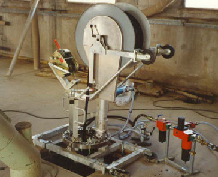
Abb. 8.5 Bedieneinrichtung, Energiezufuhr und Steuerung außerhalb des Späne-Lagerraumes
Nach dem Reinigungsvorgang ist das Silo wieder betriebsfähig. Das Späne-Material kann über die Austragung abgefördert werden. Ist auch die Austragung defekt, kann das Material gefahrlos mit den in Abschnitt 7.2 dieser DGUV Information beschriebenen Methoden extrahiert werden.
Um die Arbeiten im Falle einer Störung im Silo möglichst zügig beginnen zu können, sollte schon bei der Planung Kontakt mit einer auf die Siloreinigung spezialisierten Firma aufgenommen werden, um benötigte bauliche Voraussetzungen abzuklären und die organisatorischen Grundlagen zu besprechen.
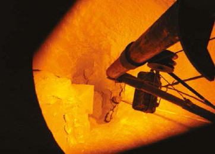
Abb. 8.6 Reinigungsmotor beim Einsatz in einem Zementsilo
Besprechungspunkte hierbei sind:
Hinweis:
Im Rahmen der Reinigung bietet sich im Allgemeinen die Möglichkeit, das Siloinnere mit einer Kamera zu besichtigen. Diese Gelegenheit sollte im Hinblick auf die Aufklärung des Zustandes der Siloinnenwände (z. B. Beschichtung) oder der Einrichtungen innerhalb des Späne-Lagerraumes (Füllstands-Kontrolle, Temperaturüberwachung, Austragung) und damit zur Abklärung von Maßnahmen zur vorbeugenden Instandhaltung wahrgenommen werden.
Über die Höhe des Silos müssen ausreichend viele Öffnungen vorgesehen werden, z. B. Stocherluken im Abstand von höchstens 6 m übereinander. Diese Öffnungen sollten über jeder Zugangstür auf Bodenniveau angeordnet werden.
Die Öffnungen zum Stochern müssen so gestaltet sein, dass durch sie nicht eingestiegen werden kann.
Bei Betonsilos werden Öffnungen von mindestens 0,80 m x 0,80 m empfohlen, die durch senkrechte Gitterstäbe bündig zur Innenseite der Stocher-Öffnung gesichert sind.
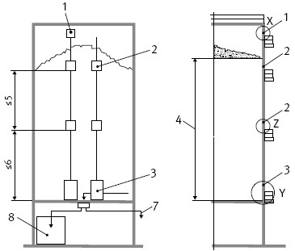
Abb. 8.7 Anordnung von Stocher-Öffnungen über die Silohöhe
Die Hersteller von Austrageinrichtungen haben mobile, auf LKW transportable Austragschnecken als Notentleerungssysteme entwickelt. Diese Systeme ermöglichen die gefahrlose Entleerung von außen. Sie brauchen nicht vorrätig gehalten zu werden und können im Bedarfsfall beim Hersteller einschließlich Bedienungspersonal angefordert werden. Die Förderleistung solcher Systeme erreicht derzeit (Stand 2014) ca. 60 m3/h.
Um dieses Notaustragsystem im Bedarfsfall auch einsetzen zu können, müssen schon bei der Errichtung des Silos Vorkehrungen getroffen werden. So müssen am Siloumfang im Bereich des Bodens Rahmen um 120 ° versetzt zur Aufnahme der Schnecke einbetoniert werden. Alternativ können auch entsprechende zusätzliche Zugangstüren vorgesehen werden.
Diese Austragsysteme unterliegen gewissen Beschränkungen in Abmessungen und Leistung, damit Transport und Handhabung möglich sind. So ist die Schneckenlänge derzeit auf ca. 6 m begrenzt, die bestreichbare Segmentgröße beträgt 120 ° (siehe Abb. 8.8).
Um eine vollständige Räumung des Siloquerschnittes zu ermöglichen, ist daher eine von der Querschnittsgröße des Silos abhängige Zahl von möglichen Angriffspunkten für das Notentleerungssystem erforderlich. Zahl und Anordnung dieser zusätzlich für die Notentleerung zu schaffenden Öffnungen hängen wesentlich vom Silodurchmesser z. B. wie folgt ab:
| • | bis 6 m Silodurchmesser: | 1 Öffnung |
| • | mehr als 6 m Silodurchmesser: | 3 Öffnungen |
Die näheren Einzelheiten sind mit dem Systemlieferfirma schon in der Planungsphase abzustimmen.
Der Einsatz des Notentleerungssystems erfolgt in der Praxis wechselseitig durch die verschiedenen Öffnungen. Diese Öffnungen können durch Aufschrauben von Stahlplatten verschlossen werden. Sind sie als begehbar anzusehen – wie es in der Regel der Fall ist –, dürfen sie sich nur mit Werkzeug öffnen lassen. Andernfalls müssen die Zugänge – wie in Abschnitt 6.2 beschrieben – gegen unbefugte Benutzung gesichert und mit dem Antrieb der Austrageinrichtung verriegelt sein.
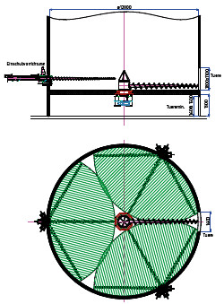
Abb. 8.8 Prinzipielle Funktionsweise und Reichweite des Notentleerungssystems
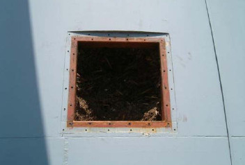
Abb. 8.9 Vorgefertigte Öffnung für den Einsatz eines Notentleerungssystems
Um die Möglichkeit zur Entleerung des Silos auch in Sondersituationen oder bei Störungen zu haben, ist es unbedingt erforderlich, dass die Austrageinrichtung über mindestens 2 Ausfallstutzen verfügt. Außerdem sollte zwischen den beiden Ausfallstutzen eine Weiche oder Umschaltmöglichkeit bestehen. Der für den Normalbetrieb nicht benötigte Ausfallstutzen kann auch mit einem Blechdeckel verschlossen werden.
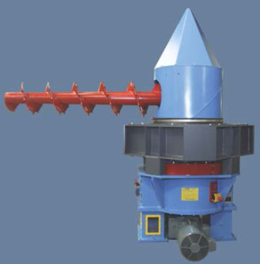
Abb. 8.10 Siloaustragung mit zwei Entnahmestutzen
Im Silo muss mindestens eine Öffnung zur Wartung bzw. Störungsbeseitigung von oben vorhanden sein. Diese sollte möglichst zentral im Deckenbereich des Späne-Lagerraumes angeordnet sein.
Wenn das Konzept zum Entleeren des Silos im Notfall oder das Konzept zur Störungsbeseitigung das Einfahren von oben vorsieht, was nach EN 12779:2013 bei neu errichteten Silos nicht zulässig ist, muss die Verfügbarkeit einer Siloeinfahreinrichtung vor Ort im Bedarfsfalle sichergestellt werden.
Das Einfahren in Silos ist nur durch entsprechend ausgebildete und mit den Risiken vertraute Fachleute, sog. befähigte Personen, zulässig. Diese Fachleute gibt es im Einsatzbetrieb in der Regel nicht!
Neben und über Einfahröffnungen für die Aufstellung bzw. Montage der Siloeinfahreinrichtung sollte so viel Platz vorgesehen werden, dass diese ohne Schwierigkeiten eingesetzt werden kann.
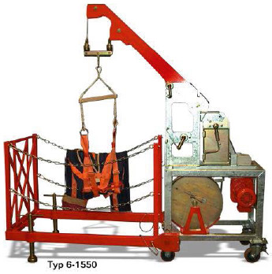
Abb. 8.11 Aufbau einer Siloeinfahreinrichtung
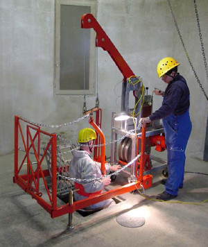
Abb. 8.12 Beispiel für das Einfahren in ein Silo mit Siloeinfahreinrichtung
Die Siloeinfahreinrichtungen bestehen aus:
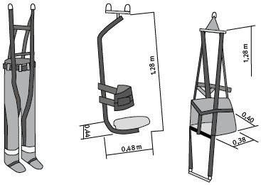
Abb. 8.13 Einfahrhose und Arbeitssitze
Arbeiten mehrere Beschäftigte gleichzeitig im Silo und besteht die Gefahr des Versinkens bzw. Verschüttet-Werdens, muss eine entsprechende Anzahl von Sicherungsposten vorhanden sein und es müssen komplette Siloeinfahreinrichtungen und Siloeinfahrhosen sowie zahlenmäßig ausreichende Sätze von persönlichen Schutzausrüstungen bereitgestellt und benutzt werden!
Eine besondere Gefährdung in Silos für Holzstaub und -späne geht von den Eigenschaften des Schüttgutes aus: Beschäftigte können im Holzstaub versinken oder von herabfallenden Anhaftungen verschüttet werden. Besonders schwierig ist die Rettung: Ein auch nur teilweise im Schüttgut versunkene Person kann ohne geeignete Sicherung nicht mehr aus dem Schüttgut herausgezogen werden! Unterschätzen Sie deshalb nie die Gefährdungen bei Arbeiten in Silos! Klären Sie Ihre Beschäftigten über die Gefährdungen auf. Legen Sie wirksame Schutz- und Rettungsmaßnahmen fest und achten Sie darauf, dass die Schutzmaßnahmen konsequent eingehalten werden.
Der mit den Arbeiten im Silo beauftragte Unternehmer muss für seine Beschäftigten eine persönliche Schutzausrüstung (PSA) gegen die jeweiligen Gefährdungen zur Verfügung stellen. Soll in ein mit Holzstaub- und -spänen gefülltes Silo eingefahren werden, ist die Bereitstellung und Verwendung folgender PSA unumgänglich:
| (1) | Geeigneter Schutzhelm: Herkömmliche Industriehelme sind beim Befahren von Behältern nicht gut geeignet. Es sollten spezielle Helme für Höhenarbeit mit sicherer Beriemung getragen werden. Sie fallen beim Herunterbeugen nicht vom Kopf und lassen sich auf dem Kopf auch nicht nach vorne verschieben. Außerdem haben sie kein störendes Schild. Auch der Sicherungsposten muss einen Helm tragen, der sicher auf dem Kopf bleibt! |
| (2) | Geeigneter Atemschutz: Beim Einsturz von Späne-Brücken, beim Absturz von überhängendem Material, aber auch durch einfaches Arbeiten im Späne-Haufen können große Staubmengen frei werden, die die Atmung extrem beeinträchtigen und in kurzer Zeit den Erstickungstod herbeiführen können. Deshalb ist beim Einfahren in nicht vollständig entleerte Silos grundsätzlich Atemschutz zu tragen. Geeigneter Atemschutz für den Umgang mit Holzstaub- und - spänen sind: |
Sobald im Verlauf der Arbeiten auch kleinere Späne-Brücken zusammenbrechen können, ist mit dem Auftreten sehr hoher Staubkonzentrationen zu rechnen. In diesen Fällen ist daher die Verwendung von fremdbelüftetem Atemschutz zwingend erforderlich.
Abb. 8.14 Vollmaske mit Partikelfilter
Hinweis:
Bei gleichzeitiger Benutzung von Atemschutz und persönlichen Schutzausrüstungen gegen Absturz (siehe Punkt (7)) sind beide Systeme so einzusetzen, dass eine gegenseitige Beeinträchtigung vermieden wird. Eine Beeinträchtigung des Atemschutzgerätes (z. B. Abreißen des Schlauches oder Herunterreißen des Atemschutzes) kann durch einen Fangstoß erfolgen. Deshalb sind in diesem Fall bei der PSA gegen Absturz der Anschlagpunkt und die Einstellung des Verbindungsmittels so zu wählen, dass eine möglichst geringe Auffangstrecke wirksam wird. Mittlerweile sind kombinierte/integrierte Ausrüstungen – bestehend aus PSAgA und Atemschutz verfügbar. Diese sollten vorzugsweise verwendet werden.
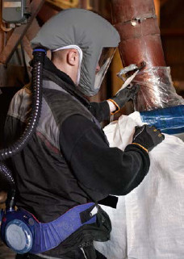
Abb. 8.15 Fremdbelüftete Atemschutzmaske
| (3) | Geschlossener Arbeitsanzug: Dieser schützt – mit langen Ärmeln ausgestattet – vor Schmutz und oberflächlichen mechanischen Verletzungen. Bei der Brandbekämpfung sollte vom unmittelbar beteiligtem Personal vorzugsweise flammenhemmende Schutzkleidung getragen werden. |
| (4) | Sicherheitsschuhe: Feste, geschlossene Sicherheitsschuhe sorgen für ausreichende Trittsicherheit und vermeiden elektrostatische Aufladungen. Zu empfehlen sind Schuhe mit besonderer Rutschhemmung (Symbol SRC) und antistatischer Ausführung (Symbol A).Die eingenähte Stahlkappe schützt den Zehenbereich außerdem vor herunterfallenden Gegenständen. Mit durchtrittsicherer Einlage bieten die Schuhe außerdem Schutz vor spitzen Gegenständen (z. B. Flügelspitzen an der Austragschnecke wie in Abb. 6.10) Um ein Eindringen von Spänen in die Schuhe zu verhindern, sollte eine geschlossene Verbindung zwischen Arbeitsanzug und Sicherheitsschuhen bestehen, z. B. durch Gamaschen. |
| (5) | Schutzbrille: Zur Grundausstattung gehört auch die genormte Gestell-Brille mit Seitenschutz. Sie wehrt Fremdkörper und Spritzer von vorne und von der Seite ab. Auf eine Schutzbrille kann verzichtet werden, wenn Atemschutz als Vollmaske mit Partikelfilter oder fremdbelüftet getragen wird. Dies ist immer dann der Fall, wenn ein Versinken im Späne-Material oder das Herunterfallen von Späne-Anbackungen nicht absolut sicher ausgeschlossen werden kann! |
| (6) | Handschuhe: Handschuhe schützen die Hände vor oberflächlichen mechanischen Verletzungen und verhindern die Austrocknung der Haut durch den Holzstaub. |
| (7) | Persönliche Schutzausrüstung (PSA) gegen Absturz: PSA gegen Absturz ist grundsätzlich immer dann zu verwenden, wenn die einfahrende Person nicht während der gesamten Einfahrzeit jederzeit wieder aus dem Siloinneren herausgezogen werden kann (z. B. durch eine mit der Siloeinfahreinrichtung fest verbundene Siloeinfahrhose). Das System besteht aus einem Verbindungsmittel (Anschlagseil) und einem Auffanggurt. Der Auffanggurt ist mit einem Verbindungselement des Verbindungsmittels (Anschlagseil) verbunden. Das Verbindungsmittel wird an der Arbeitssitz-Aufhängung der Siloeinfahreinrichtung angeschlagen und beim Verlassen des Arbeitssitzes durch Anziehen der Winde straff gespannt und während der ganzen Zeit der Arbeiten straff gehalten. Dadurch wird sowohl das Versinken der einfahrenden Person im Schüttgut als auch deren Absturz nach Einstürzen einer Späne-Brücke vermieden. |